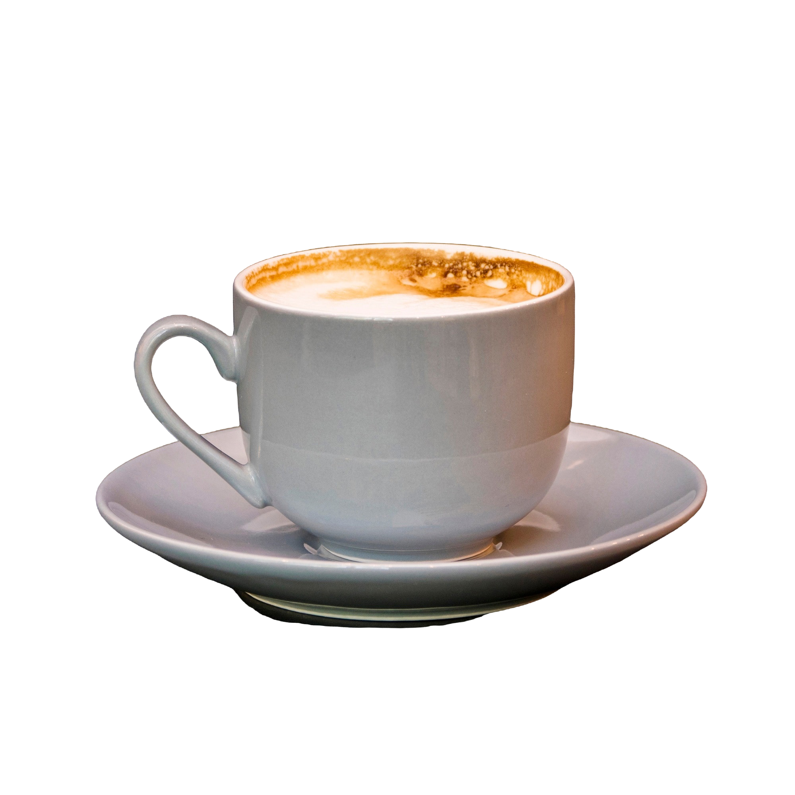
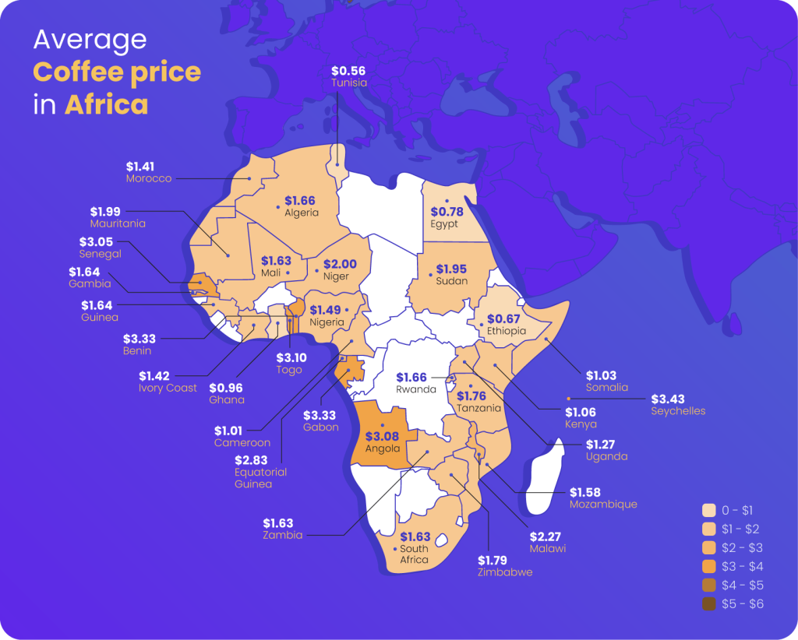

מה זה קפה בשבילכם?
"קפה הוא אהבה, קפה הוא יצירה." - ג'קי קנדי
"אין דבר טוב יותר מקפה טוב כדי להתחיל את היום." - ג'ורג' אורוול
"חיים בלי קפה הם חיים חסרים." - ג'וליה צ'יילד
"קפה הוא הדחף שמחיה את הנשמה." - סר דייוויד פוסטר וואלס
"אם החיים נותנים לך לימונים, תחליף אותם בקפה." - הנרי פ. דראפ
"קפה הוא חומר הגלם שלי; הוא הפלאי שלי." - מולי דדסון
"קפה הוא הדרך שלי לומר 'אני כאן'." - מרי לורנס
"בכל כוס קפה יש סיפור שממתין להיגרם." - שגיא לוי
מי אנחנו?
ברוכים הבאים לאתר "עולם הקפה", המקום בו תוכלו לגלות את כל מה שקשור לקפה - מההיסטוריה המרתקת של המשקה המוכר בעולם, דרך שיטות ההכנה השונות ועד המלצות על בתי קפה מומלצים בישראל.
האתר נועד לספק מידע מקיף ומעמיק לכל המעוניין, בין אם אתם חובבי קפה מקצועיים או סתם אוהבים לשתות כוס קפה טובה בבוקר. אנו שואפים לקדם תרבות קפה מודעת ומעשירה, תוך שמירה על עקרונות נגישות ונוחות השימוש.
באתר תוכלו גם להזמין קפה ישירות, כך שתמיד תהיו מוכנים לפנק את עצמכם או את האורחים שלכם. בואו להיכנס לעולם הקפה ולהתענג על כל טעם וניחוח שהוא!.
המלצת היום
נסו את קפה האספרסו המיוחד שלנו עם חלב קצף.
כמה הקפה שלכם עולה באפריקה?
מחיר הקפה הממוצע בארץ נע בין 15 ל-20 ש"ח לכוס, לחצו על המפה כדי לגלות כמה הוא עולה באפריקה:
בתי קפה מומלצים בישראל
קפה תמר (תל אביב): בית קפה קסום בלב תל אביב, המציע תפריט מגוון של קפה איכותי, מנות בוקר עשירות ועוגות ביתיות. האווירה במקום היא נינוחה ונעימה, מושלמת לפגישות עם חברים או עבודה על המחשב.
אורסולה (ירושלים): קפה וגלריה, הממוקם במרכז ירושלים. המקום מציע מבחר קפה מעולה, מאפים טריים וארוחות קלות, כל זאת באווירה אמנותית ומיוחדת. מדי שבוע מתקיימות תערוכות אמנות שונות.
קפה נורדוי (תל אביב): מקום פופולרי בקרב המקומיים, הידוע בקפה הטעים שלו ובשירות המצויין. התפריט כולל מנות בוקר מפנקות וקינוחים מושחתים, מה שהופך אותו ליעד חובה לכל חובבי הקפה.
קפה מזרחי (חיפה): קפה משפחתי עם מסורת ארוכה הממוקם במרכז חיפה. המיקום והאווירה הביתית מביאים לאנשים להגיע ליהנות מקפה איכותי ומאפים ביתיים, עם דגש על חומרי גלם טריים.
מהכוס אל הצלחת
קפה הוא לא רק משקה, אלא גם מרכיב שניתן לשלב במגוון רחב של מאכלים.
ריכזנו עבורכם כמה מתכונים: